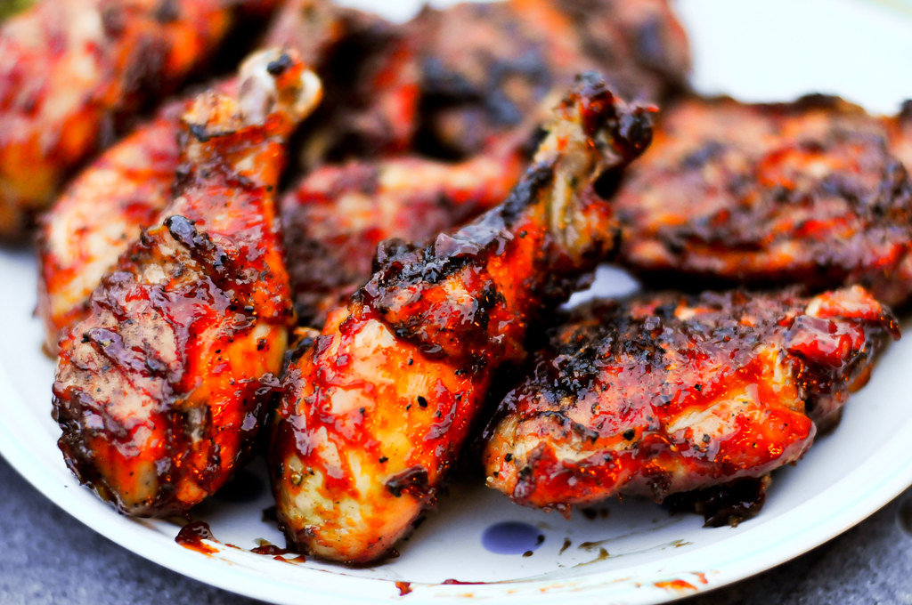

Home
Barbeque Chicken

Description
Chicken baked in a home made barbecue sauce. Very easy. Very good.
Ingredients
- 4 tablespoons water
- 3 tablespoons ketchup
- 3 tablespoons brown sugar
- 2 tablespoons vinegar
- 1 tablespoon lemon juice
- 2 tablespoons Worcestershire sauce
- 1 teaspoon salt
- 1 teaspoon dry mustard
- 1 teaspoon chili powder
- 12 chicken thighs, skin removed
Steps
- Preheat the oven to 500 degrees F (260 degrees C). In a small saucepan over medium heat, stir together the water, ketchup, brown sugar, vinegar, lemon juice, and Worcestershire sauce. Season with salt, mustard powder, and chili powder. Simmer the sauce for 15 minutes.
- Place the chicken thighs into an oblong baking dish, and pour the sauce over them. Cover tightly.
- Bake for 15 minutes in the preheated oven, then reduce the temperature to 300 degrees F (150 degrees C), and bake for one hour. Remove cover, stir and bake uncovered for 15 minutes.